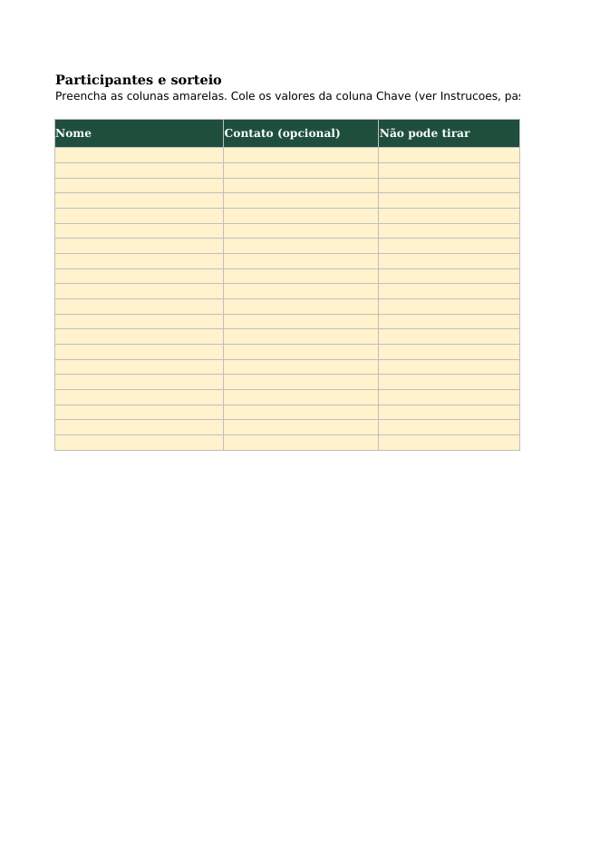

Planilha de amigo secreto e lista de presentes de Natal

Planilha Excel que sorteia o amigo secreto sem repetir nomes e sem deixar ninguém tirar a si mesmo, com lista de presentes por pessoa, aviso de limite de valor e consulta individual. Sem macros, até 20 participantes.
R$ 19,90
Para quem é
Para quem organiza o amigo secreto da família, do trabalho ou de um grupo de amigos (de 3 a 20 pessoas) e quer um sorteio em que ninguém tira a si mesmo e ninguém tira o mesmo nome duas vezes, sem papelzinho. O comportamento do sorteio foi testado no LibreOffice Calc (ver Compatibilidade).
O problema
Sorteio à mão costuma dar errado: alguém tira a si mesmo, o casal tira um ao outro, e o organizador esquece quem já tirou quem. Depois, cada pessoa ainda precisa dizer o que quer ganhar, e a lista chega em mensagens soltas. A planilha resolve as duas partes num arquivo só.
O que vem dentro (arquivo Excel: planilha-amigo-secreto-e-lista-de-presentes-natal.xlsx, 6 abas)
- Instrucoes: passo a passo de 5 etapas e as regras de sigilo.
- Parametros: nome do grupo, ano e valor máximo do presente (padrão R$ 100). Presentes acima desse valor aparecem marcados.
- Participantes: até 20 nomes, campo "Não pode tirar" (por exemplo, o cônjuge) e a coluna Verificação, que mostra "ok" ou "REFAZER" para cada pessoa.
- Presentes: até 15 desejos por pessoa, com link ou onde achar, preço estimado e detalhe (tamanho, cor).
- Sorteio: visão do organizador com todos os pares. Guarde este arquivo; não o envie ao grupo.
- Consulta: cada pessoa digita o próprio nome e vê quem ela presenteia e a lista dessa pessoa.
Como usar
- Na aba Parametros, escreva o nome do grupo e o valor máximo.
- Na aba Participantes, digite os nomes nas células amarelas (até 20). Em "Não pode tirar", escreva quem a pessoa não deve tirar.
- Copie os números da coluna "Chave sugerida" e cole como valores na coluna "Chave" (Colar especial > Valores). Isso fixa o sorteio.
- Confira a coluna Verificação: todas devem mostrar "ok". Se aparecer "REFAZER", troque o número da chave da pessoa marcada e confira de novo.
- Cada pessoa preenche a própria lista na aba Presentes. Para mostrar o amigo, use a aba Consulta e envie só essa tela.
Comece em 10 minutos (exemplo com 4 pessoas)
- Abra o arquivo e vá em Parametros. Digite "Amigo secreto da família 2026" e o valor máximo, por exemplo R$ 100.
- Vá em Participantes. Digite Ana, Bruno, Carla e Diego. Em "Não pode tirar" da Ana, escreva Bruno, se ela não deve tirar o irmão dele.
- Copie a coluna "Chave sugerida" e cole como valores na coluna "Chave". Pronto: cada pessoa já tem o amigo definido.
- Confira a Verificação: se todas estiverem "ok", o sorteio está válido. Se a Ana aparecer "REFAZER", troque a chave dela e confira de novo.
- Peça que cada pessoa escreva os desejos na aba Presentes (até 15 cada). Quando a lista estiver pronta, use a aba Consulta: digite o nome, veja o amigo e a lista e envie só essa tela a cada pessoa.
O que a planilha NÃO faz
- Não envia mensagens. Quem organiza comunica o resultado a cada pessoa.
- Não sorteia sozinha ao abrir: o sorteio fica fixo quando você cola os valores da chave.
- Não usa macros, não guarda dados na nuvem e não precisa de internet.
- Não garante que o presente agrade. A lista ajuda a escolher.
- Não tem versão para celular. Use em computador.
Compatibilidade
Testada no LibreOffice Calc (versão de linha do servidor de testes, 13/10/2026) com 4 participantes de teste (Ana, Bruno, Carla, Diego), chaves 3, 1, 4, 2:
- Sem restrição: o sorteio gera um anel sem repetição e sem autossorteio (Ana tira Carla, Bruno tira Diego, Carla tira Bruno, Diego tira Ana): todas as linhas Verificação dão "ok".
- Com "Não pode tirar" da Ana = Carla e a chave sugerida que faria Ana tirar Carla: a coluna Verificação mostra "REFAZER: restrição" para Ana, como esperado.
- Sem erro de fórmula (#DIV/0!, #REF!, #NAME?, #VALUE!, #N/A) nas abas de cálculo.
Testado também: a marcação de presente acima do limite (R$ 150 com limite de R$ 100 = SIM). Não testado: a aba Consulta e o caminho de compra. Ainda não foi testada no Excel, no Google Sheets nem no celular.
Garantia
Garantia legal de 7 dias para compras feitas fora do estabelecimento comercial, inclusive pela internet (art. 49 do Código de Defesa do Consumidor), contados a partir do recebimento do arquivo. Para pedir reembolso nesse prazo, escreva para julin50cents+commerce@gmail.com.
Preço e status
Preço proposto: R$ 19,90, pagamento único. A página fica como rascunho até a plataforma de venda (checkout) estar ativa; enquanto isso, o link de compra não aparece e o produto não está à venda.
Perguntas frequentes
Preciso saber Excel? Não. Você preenche só as células amarelas; as contas já estão prontas. Dá para usar em outro ano? Sim. Troque o ano na aba Parametros e apague as listas de presentes do ano anterior. Funciona com menos de 3 pessoas? Com 2 pessoas, cada uma tira a outra. Com 1 pessoa não há sorteio. Funciona no celular? Ainda não foi testada no celular. Use no computador. Posso copiar a lista de presentes para outra planilha? Sim, a aba Presentes pode ser copiada, desde que os nomes sejam iguais aos da aba Participantes.
R$ 19,90